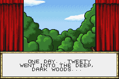

Tweety and the Magic Gems (USA)
SRAM 256K gbakit Built-In 💾 MultiBoot 🎮 4P Link
Cartridge Identity
- Game Code
ATME(FamilyATM)- Header Title
TWEETY MAGIC- Maker / Revision
7F/ rev0- ROM Size
- 4.0 MiB (4,194,304 B)
- Save Media
SRAM 256K- SHA-256
078096c1c312875ce40ee82c640faff34f748d298db2e5a93e49a80c71669419- Engine / SDK Group
comm-035(5 families)
Screenshots

Link Cable & Multiplayer Communications
This title contains detected communication capabilities: 💾 MultiBoot 🎮 4P Link.
Detailed protocol specifications, SIO registers, Joybus commands, and MultiBoot sequences are documented in the Link & Multiplayer Reference.
- Multi-Player SIO (4P)
- 16-bit ring network · SIOCNT (
0x04000128) literals:0x000a4c,0x000be0,0x000c3c· SIODATA32/SIOMULTI0 (0x04000120) literals:0x000c34 - Single-Cart MultiBoot
- Single-Cartridge MultiBoot (Download Play) client/server handler · Thumb SWI 0x25 (
0xDF25):0x33a1fe,0x347d4a,0x3612c4,0x36b406
Battery Save Support in gbakit
Built-in definition (ATME)
gbakit save verify ATME save.sav
gbakit save decode ATME save.sav
gbakit save fix ATME damaged.sav -o repaired.savROM Assets, Compression & Audio
- BIOS Compression
- LZ77 (
0x10): 1 streams · RLE (0x30): 0 streams - ROM Pointer Tables
- 34 tables (0 pointing to validated compressed streams)
- SDK Backup Tags
SRAM_V112
Asset Map (formatkit.asset-map.v1)
Download ATME-r0-078096c1c312875c.asset-map.json.gz (190,468 B (186.0 KiB)) Verified PASS · 11.52% coverage
| Metric | Bytes / Value | Entries |
|---|---|---|
| Identified | 227,100 B (221.8 KiB) (5.41%) | 1,725 |
| Mapped | 0 B (0.00%) | 0 |
| Opaque | 256,052 B (250.1 KiB) (6.10%) | 1 |
| Unknown | 3,711,152 B (3.54 MiB) (88.48%) | 1,574 |
| Total ROM Size | 4,194,304 B (4.00 MiB) | 3,300 |
| Coverage % | 11.52% | — |
| Entries w/ Code Refs | 1,796 / 3,300 (54.42%) | — |
Top Identified Formats: gfx.gba-palette (1,722 · 218,304 B (213.2 KiB)) · compress.bios-huffman (1 · 7,300 B (7.1 KiB)) · audio.m4a-song-table (1 · 1,304 B (1.3 KiB)) · gba.rom-header (1 · 192 B)
Largest unknown Extents (Headerless / Custom Asset Candidates)
| Offset | Size | Shannon Entropy | Code Refs |
|---|---|---|---|
0x00052C5C | 512,932 B (500.9 KiB) | 5.413 bits/B | 0 |
0x000F14B8 | 301,440 B (294.4 KiB) | 6.009 bits/B | 0 |
0x00338ACC | 281,308 B (274.7 KiB) | 7.287 bits/B | 0 |
0x0002DAF8 | 97,416 B (95.1 KiB) | 5.835 bits/B | 0 |
0x002953F8 | 78,208 B (76.4 KiB) | 2.587 bits/B | 0 |
gzip -dk ATME-r0-078096c1c312875c.asset-map.json.gz && gbakit map verify rom.gba ATME-r0-078096c1c312875c.asset-map.json
gbakit assets export rom.gba --asset-map ATME-r0-078096c1c312875c.asset-map.json -o out/Text, Fonts & Scene Data
- Primary Text Encoding
- Shift-JIS (uncompressed) · custom 1-byte charmap (base 'A' = 0x80) (
20ASCII strings ·27Shift-JIS runs) - Font & VWF Indicators
- No VWF Table 1bpp Font · BIOS SWIs: BitUnPack
0x10:1· LZ770x11/12:7· Huffman0x13:0· RLE0x14/15:0 - Scene & Packaging
21ROM pointer tables (≥32 entries,3≥200) ·1relativeu32TOCs ·438OAM metasprite hits
Hardware MMIO Subsystems
ppu_display0x801d7ac,0x8025ea0,0x8025ebc,0x8025fc0save_bus_sram_flash0x80258a8
Regional Variants & Revisions (Family ATM)
- Titi et les Bijoux Magiques (France) (
ATMF, 4 MiB) - Tweety and the Magic Gems (Europe) (
ATMP, 4 MiB) - Tweety and the Magic Gems (Germany) (
ATMD, 4 MiB) - Tweety and the Magic Gems (Netherlands) (
ATMH, 4 MiB)